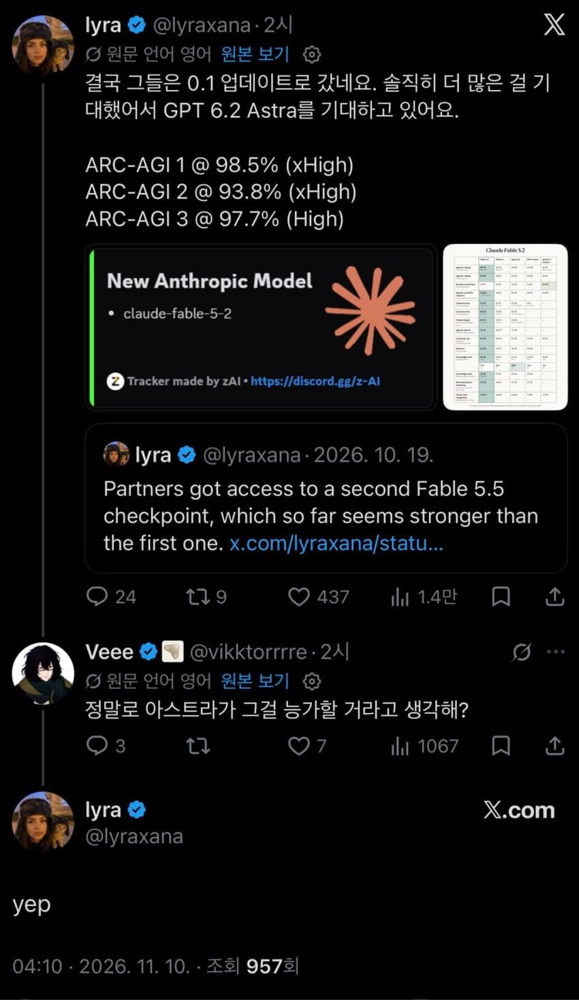

— · 18 · 2026-11-10 10:11:01 · 원문

수집 당시 댓글 18개
ㅇㅇ · 11.10 06:27:02
ㅇㅇ · 11.10 06:27:03
ㅇㅇ · 11.10 06:27:11
ㅇㅇ · 11.10 06:31:19
ㅇㅇ · 11.10 06:35:59
키나루디안마기 · 11.10 07:55:45
ㅇㅇ1 · 11.10 08:21:15
↳ 답글 · ㅇㅇ2 · 11.10 08:55:11
땨뗘(봇) · 11.10 10:11:04
ㅇㅇ · 11.10 10:14:43
↳ 답글 · ㅇㅇ · 11.10 10:16:05
ㅇㅇ · 11.10 10:19:20
ㅇㅇ · 11.10 10:21:33
Adriel · 11.10 10:25:31
아님말고 · 11.10 10:25:36
ㅇㅇ · 11.10 10:35:41
파치카 · 11.10 12:01:38
ㅇㅇ · 11.10 16:49:58
댓글
수집 당시 댓글 18개
ㅇㅇ · 11.10 06:27:02
ㅇㅇ · 11.10 06:27:03
ㅇㅇ · 11.10 06:27:11
ㅇㅇ · 11.10 06:31:19
ㅇㅇ · 11.10 06:35:59
키나루디안마기 · 11.10 07:55:45
ㅇㅇ1 · 11.10 08:21:15
· ㅇㅇ2 · 11.10 08:55:11
땨뗘(봇) · 11.10 10:11:04
ㅇㅇ · 11.10 10:14:43
· ㅇㅇ · 11.10 10:16:05
ㅇㅇ · 11.10 10:19:20
ㅇㅇ · 11.10 10:21:33
Adriel · 11.10 10:25:31
아님말고 · 11.10 10:25:36
ㅇㅇ · 11.10 10:35:41
파치카 · 11.10 12:01:38
ㅇㅇ · 11.10 16:49:58